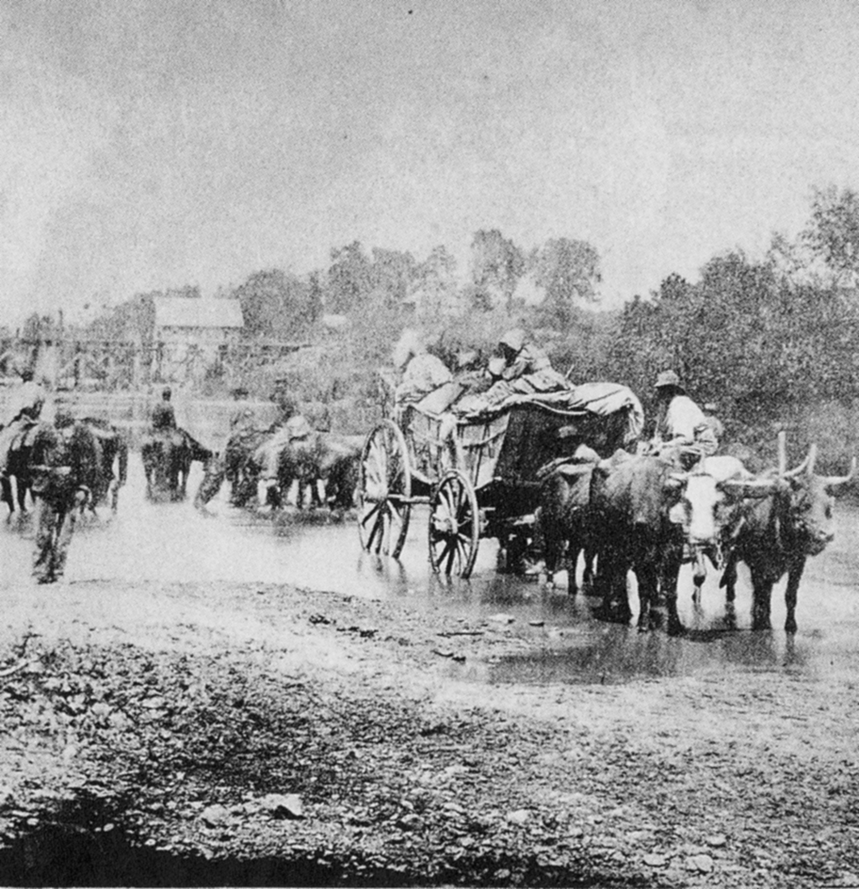
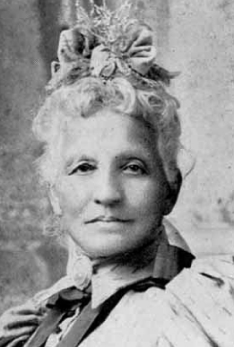
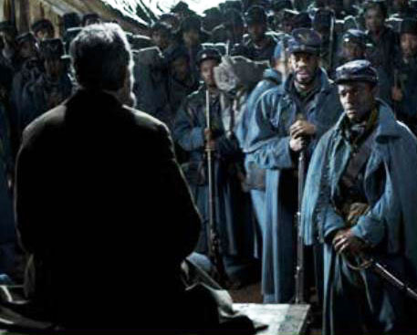

|
The latest film by Steven Spielberg, Lincoln, which opens nationwide on Friday,
has the makings of an Oscar shoo-in, particularly for Daniel Day-Lewis's performance in
the title role. The first scene is arresting: Two black soldiers speak with the president
about their experiences in combat. One, a corporal, raises the problem of unequal
promotions and pay in the Union Army. Two white soldiers join them, and the scene
concludes as the corporal walks away, movingly reciting the final lines of the Gettysburg
Address.
Unfortunately it is all downhill from there, at least as far as black characters are
concerned. As a historian who watched the film on Saturday night in Chicago, I was not
surprised to find that Mr. Spielberg took liberties with the historical record. As in
Schindler's List and Saving Private Ryan, his purpose is more to entertain
and inspire than to educate.
But it's disappointing that in a movie devoted to explaining the abolition of slavery
in the United States, African-American characters do almost nothing but passively wait for
white men to liberate them. For some 30 years, historians have been demonstrating that
|

Fugitive slaves crossing the Rapidan River in Virginia, en route
to Washington, D.C.
|
slaves were crucial agents in their emancipation; however imperfectly, Ken Burns's 1990
documentary The Civil War brought aspects of that interpretation to the American
public. Yet Mr. Spielberg's Lincoln gives us only faithful servants, patiently
waiting for the day of Jubilee.
This is not mere nit-picking. Mr. Spielberg's Lincoln helps perpetuate the
notion that African Americans have offered little of substance to their own liberation.
While the film largely avoids the noxious stereotypes of subservient African-Americans for
which movies like Gone With the Wind have become notorious, it reinforces, even if
inadvertently, the outdated assumption that white men are the primary movers of history
and the main sources of social progress.
The nation's capital was transformed by the migration of fugitive slaves from the South
during the war, but you'd never know it from this film. By 1865--Mr. Spielberg's film
takes place from January to April--these fugitives had transformed Washington's streets,
markets and neighborhoods. Had the filmmakers cared to portray African-Americans as
meaningful actors in the drama of emancipation, they might have shown Lincoln interacting
with black passers-by in the District of Columbia.
Black oral tradition held that Lincoln visited at least one of the capital's
government-run "contraband camps," where many of the fugitives lived, and was moved by the
singing and prayer he witnessed there. One of the president's assistants, William O.
Stoddard, remembered Lincoln stopping to shake hands with a black woman he encountered on
the street near the White House.
In fact, the capital was also home to an organized and highly politicized community of
free African-Americans, in which the White House servants Elizabeth Keckley and William
Slade were leaders. Keckley, who published a memoir in 1868, organized other black women
to raise money and donations of clothing and food for the fugitives who'd sought refuge in
|

Elizabeth Keckley
|
Washington. Slade was a leader in the Social, Civil and Statistical Association, a black
organization that tried to advance arguments for freedom and civil rights by collecting
data on black economic and social successes.
The film conveys none of this, opting instead for generic, archetypal characters.
Keckley (played by Gloria Reuben) is frequently seen sitting with the first lady, Mary
Todd Lincoln (played by Sally Field), in the balcony of the House of Representatives,
silently serving as a moral beacon for any legislator who looks her way. Arguably her most
significant scene is an awkward dialogue with Lincoln in which he says bluntly, "I don't
know you," meaning not just her but all black people. Keckley replies, as a representative
of her race, that she has no idea what her people will do once freed. As if one archetype
were not enough, she adds that her son has died for the Union cause, making her grief the
grief of all bereaved mothers.
Meanwhile, Slade (Stephen Henderson) is portrayed as an avuncular butler, a black
servant out of central casting, who watches in prescient sorrow as his beloved boss
departs for the theater on a fateful April evening.
It would not have been much of a stretch--particularly given other liberties taken by
the filmmakers--to do things differently. Keckley and Slade might have been shown leaving
the White House to attend their own meetings, for example. Keckley could have discussed
with Mrs. Lincoln the relief work that, in reality, she organized and the first lady
contributed to. Slade could have talked with Lincoln about the 13th Amendment. Indeed, his
daughter later recalled that Lincoln had confided in Slade, particularly on the nights
when he suffered from insomnia.
Even more unsettling is the brief cameo of Lydia Smith (played by S. Epatha Merkerson),
housekeeper and supposed lover of the Pennsylvania congressman and Radical Republican
Thaddeus Stevens, played by Tommy Lee Jones. Stevens's relationship with his "mulatto"
|

The only appearance of black troops in Spielberg's
Lincoln is in this scene at the start of the film, which was
contrived as a means of incorporating the Gettysburg Address (November 1863) into the
movie (set in early 1865), and did not actually happen.
|
housekeeper is the subject of notoriously racist scenes in D. W. Griffith's 1915 film
Birth of a Nation. Though Mr. Spielberg's film looks upon the pair with far more
sympathy, the sudden revelation of their relationship--Stevens literally hands the
official copy of the 13th Amendment to Smith, before the two head into bed
together--reveals, once again, the film's determination to see emancipation as a gift from
white people to black people, not as a social transformation in which African-Americans
themselves played a role.
The screenplay, written by Tony Kushner, is attentive to the language of the period and
features verbal jousting among white men who take pleasure in jabs and insults. By
contrast, the black characters--earnest and dignified--are given few interesting or
humorous lines, even though verbal sparring and one-upmanship is a recognized aspect of
black vernacular culture that has long shaped the American mainstream. Meanwhile, perhaps
the greatest rhetorician of the 19th century, Frederick Douglass, who in fact attended the
White House reception after Lincoln's second inauguration in March 1865, is nowhere to be
seen or heard.
It is a well-known pastime of historians to quibble with Hollywood over details. Here,
however, the issue is not factual accuracy but interpretive choice. A stronger
African-American presence, even at the margins of Mr. Spielberg's Lincoln, would
have suggested that another dynamic of emancipation was occurring just outside the
frame--a world of black political debate, of civic engagement and of monumental effort for
the liberation of body and spirit.
That, too, is the history of abolition; Lincoln is an opportunity squandered.
Source: Kate Masur in The New York Times (November 12, 2012).
|